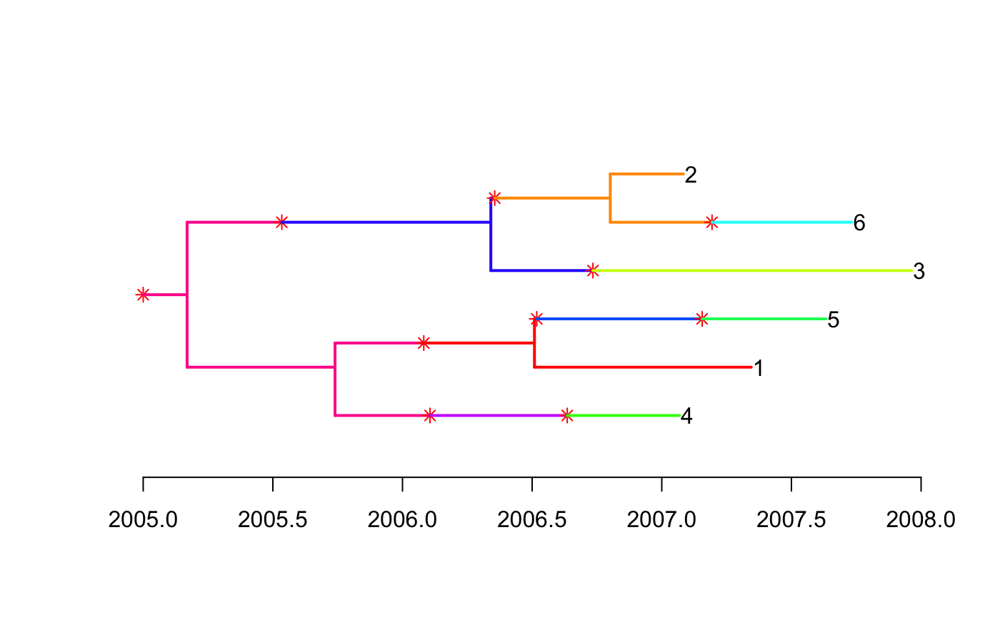
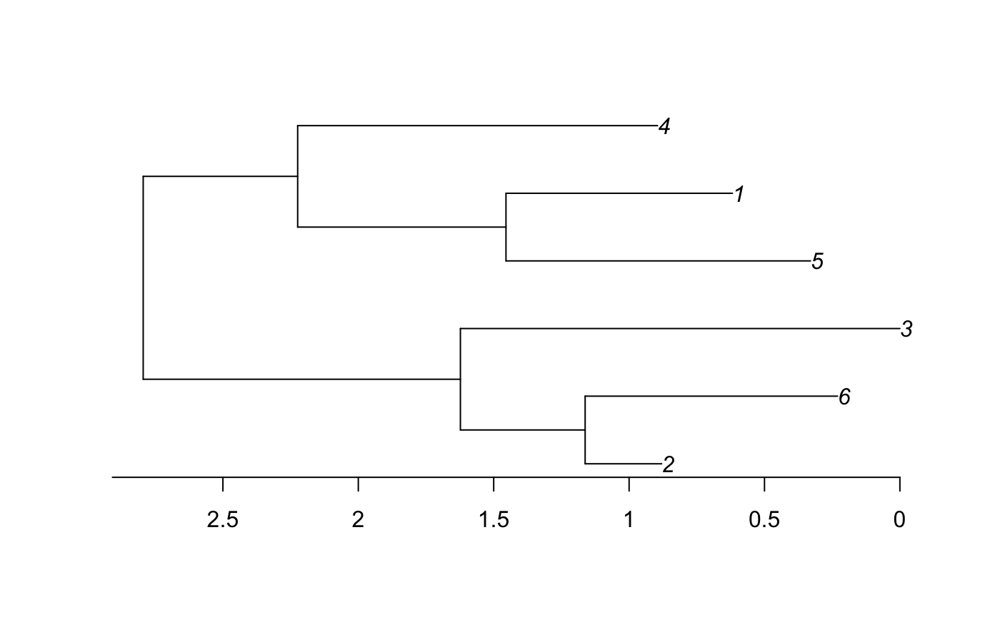
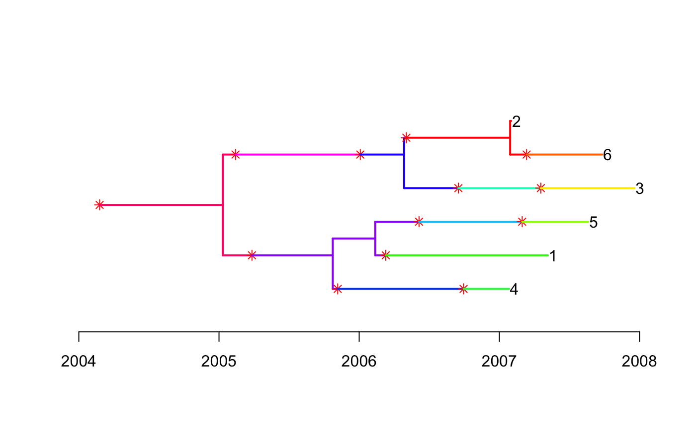
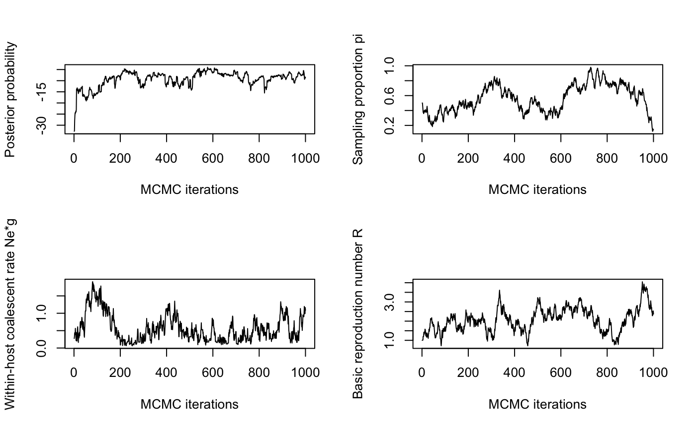
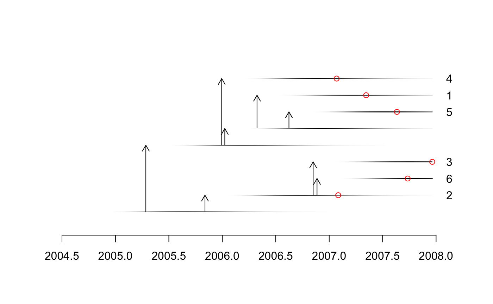
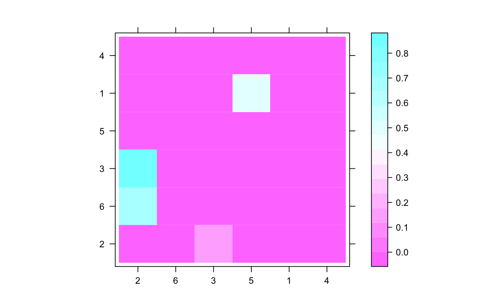
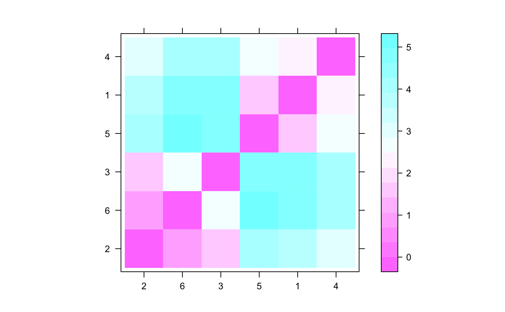

Tutorial introducing the R package TransPhylo
Xavier Didelot
2018-12-11
Source:vignettes/TransPhylo.Rmd
TransPhylo.RmdIntroduction
Welcome to this quick tutorial on TransPhylo. TransPhylo is a R package that can reconstruct infectious disease transmission using genomic data. The input is a dated phylogeny, where leaves correspond to pathogens sampled from the known infected hosts. The main output is a transmission tree which indicates who infected whom, including the potential existence of unsampled individuals who may have acted as missing transmission links. TransPhylo works by colouring the branches of the phylogeny using a separate colour for each host, sampled or not. Each section of the tree coloured in a unique colour represents the pathogen evolution happening within a distinct host. Changes of colours on branches therefore correspond to transmission events from one host to another.
In the first part of this tutorial we will simulate a dataset. In the second part we will analyse the dataset simulated in the first part. If you already have a dataset on which you want to apply TransPhylo you can skip the first part, although you might still find it useful to read as it introduces some of the concepts in our model.
If you have not already done so, you can install TransPhylo using the following R command:
You should then be able to load TransPhylo using:
Finally, if you want to reproduce exactly the same results as the ones shown in this tutorial, you should set the seed of your random number generator to the same as mine:
Simulation
A pathogen has an effective within-host population size of \(N_e=100\) and a generation time \(g=1\) day, so that \(N_e g=100/365\) year. The offspring distribution is negative binomial with mean equal to the basic reproduction number \(R=5\). Both the generation time and the sampling time are Gamma distributed with parameters (10,0.1) which has a mean of 1 year. The density of sampling is \(\pi=0.25\). The following commands specify these parameters:
We simulate an outbreak that starts in 2005 and which and is observed up to 2008:
simu <- simulateOutbreak(neg=neg,pi=pi,off.r=off.r,w.shape=w.shape,
w.scale=w.scale,dateStartOutbreak=2005,dateT=2008)This simulation contains both the transmission tree between infected hosts and the within-host phylogenetic tree of each host. This can be visualised as a colored phlogenetic tree, where each host is represented by a unique color:

The transmission tree can be extracted and plotted separately from the phylogeny:

The phylogenetic tree can be extracted and converted into a phylo object from the ape package:

Let us save this tree into a Newick file so that we can use it as input in the second part.
Note that this phylogeny is scaled in years, but time is measured only relatively to the date of the last sample which is at 0 on the x-axis of the figure above. To use this tree in the second part we also need to know exactly when was the last sample taken:
## [1] 2007.964Inference of transmission tree given a phylogeny
This second part is independent from the first part, so we start by erasing the workspace and resetting the seed of the random number generator:
Our starting point is a timed phylogenetic tree such as the one created in the previous part and that we stored in the tree.nwk file. Because such a phylogeny is timed relatively and not absolutely, we also need to indicate when the last sample was taken, which in the simulation above was equal to 2007.964. However, if you are using your own dataset, you should set this equal to the date at which the last sample was taken.
ptree<-ptreeFromPhylo(read.tree('tree.nwk'),dateLastSample=2007.964)
file.remove('tree.nwk') #Erase the tree.nwk file since we will not need it anymoreTransPhylo also needs to know the parameters of the Gamma distribution representing the generation time. In the simulation above we assumed that these parameters were equal to (10,0.1), and so this is what we specify below. However, if you are using your own data, you should set these values to something sensible for your pathogen of interest.
Finally TransPhylo needs to know the time at which observation of cases stopped. In the simulation above this was equal to 2008, and so this is what we specify below. However, if you are using your own data, you should set this equal to the date when observation stopped for your outbreak of interest. It might be today’s date if you are doing a real-time genomic epidemiology investigation. It can even be set equal to Inf if you are confident that the outbreak is finished and that there will be no cases in the future, for example if you are analysing an old outbreak which is clearly finished.
The MCMC procedure to infer the transmission tree given the phylogenetic tree can be run as follows:
Interpretation of results
The last command returned a record of all MCMC iterations. This is what the transmission tree looks like at the end of the MCMC:

Traces of the MCMC can be plotted as follows:

Further assessment of the MCMC convergence and mixing can be obtained using the CODA package, for example to obtain the effective sample size of paramaters as follows:
## pi neg R
## 3.247992 5.980158 4.573666A consensus transmission tree can be built as follows:

A matrix of probability of direct transmission for all pairs of individuals can be drawn as follows:

It is also possible to plot a matrix indicating for each pairs of individuals how many intermediates there are in the transmission chain:
